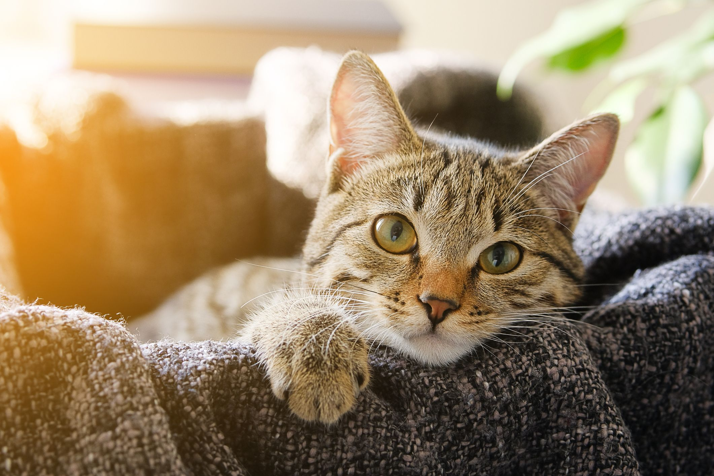

cats “give us attention, relieve our loneliness, provide comfort, fun, and play, affection, and special unique permission to stroke/ pet them and keep them on our laps, which we know releases oxytocin,br which in turn suppresses the production of cortisol, a stress hormone.
